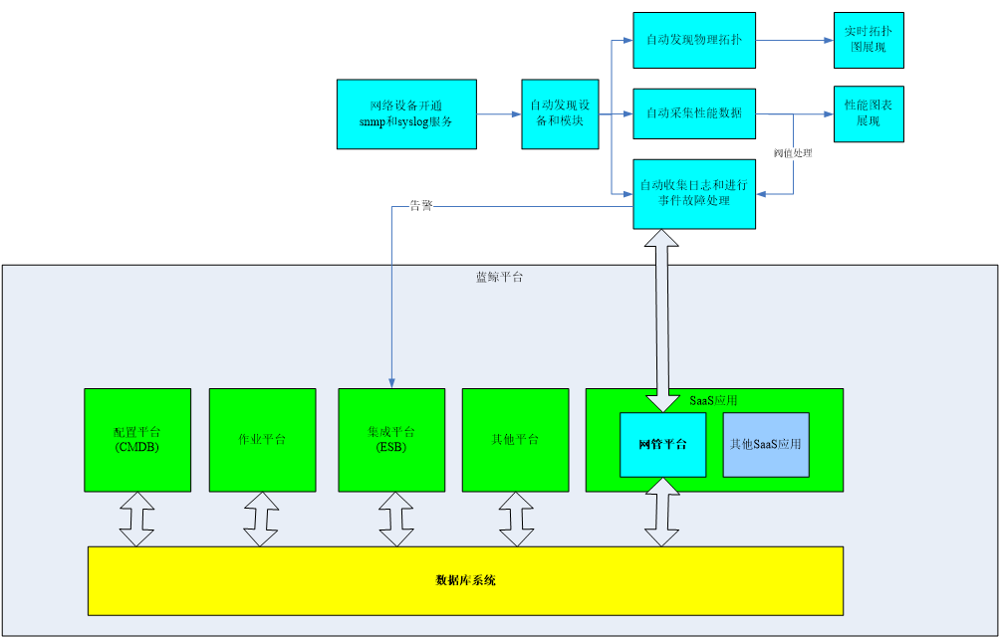

功能介绍
社区版的主要功能包括：
设备管理：设备和模块信息的自动扫描和归档。
事件和故障管理：事件丰富、压缩、对冲、关联和自动化等处理
性能管理：海量性能 KPI 数据的采集，阀值处理和多 KPI 的自由组合展现
拓扑管理：异构网络环境的物理拓扑自动发现和动态展现
监控对象包括但不限于：网络设备，安全设备，服务器等。
核心优势
社区版做为蓝鲸平台的一个 SaaS 应用，与蓝鲸平台紧密结合，包括：
一体化部署：随着蓝鲸平台的部署而自动完成安装和启动运行
单点登录：集成蓝鲸平台的用户和权限管理体系
告警服务：集成蓝鲸的告警平台
可以集成蓝鲸平台的 CMDB

自动发现
产品支持所需的各种处理的自动工作，无需手工去增添资源信息。这些自动化工作包括但不限于：
设备的自动发现
设备类型的自动判断和归档
设备模块的自动发现和类型自动判断
设备发现后自动采集基本的性能数据
异构环境的网络物理拓扑的自动发现
日志信息的自动采集和抑制，丰富，升降级，自愈，转发等自动处理
开箱即用
产品预置了系统运行所需的基本参数，包括设备类型定义，KPI，设备分组，常用性能数据采集插件等。系统初次运行之后，即可进行设备的自动扫描，性能数据的自动采集，日志事件的自动采集和处理等，无需手工配置。